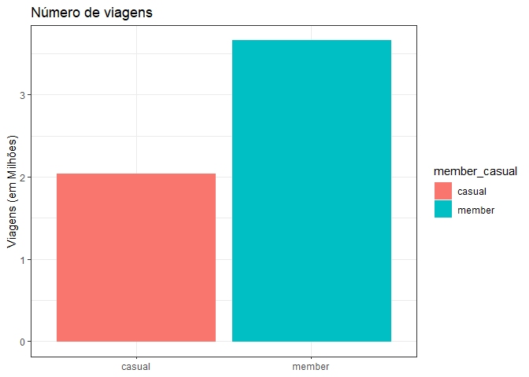

Cyclistic_bike_share_Projeto
Matheus Batista
2024-03-25
Estudo de Caso Cyclistic
O fluxo de trabalho de análise de dados é o seguinte: Perguntar, Preparar, Processar, Analisar e Compartilhar (combinados neste caso), e Agir.
Introdução
Este caderno é um projeto de conclusão de curso da Certificação Profissional de Análise de Dados do Google.
O projeto consiste em um estudo de caso sobre a empresa Cyclistic, um serviço de compartilhamento de bicicletas na cidade de Chicago.
A Cyclistic opera com uma frota de 5.824 bicicletas e uma rede de 692 estações em Chicago. A empresa oferece dois modelos de serviço: passes diários, para viagem única ou dia inteiro, e assinaturas anuais.
Os clientes que optam pelas assinaturas anuais são chamados de “membros Cyclistic”. Aqueles que utilizam as bicicletas por meio dos passes diários são denominados “usuários casuais”.
Os analistas financeiros da Cyclistic concluíram que os membros anuais são mais rentáveis do que os usuários casuais. Lily Moreno, diretora de marketing da Cyclistic, acredita que maximizar o número de membros anuais será fundamental para o crescimento futuro da empresa. Em vez de direcionar uma campanha de marketing para atrair novos clientes, ela vê uma oportunidade de converter os usuários casuais em membros. Ela observa que os ciclistas casuais já estão cientes do programa Cyclistic e optaram pela empresa para suas necessidades de mobilidade.
Para orientar a análise dos dados, este projeto seguira as seis etapas de análise de dados recomendadas pelo Google: perguntar, preparar, processar, analisar, compartilhar e agir.
1: Perguntar
Os principais questionamentos que nortearão a analise são acerca de compreender como os membros Cyclistic e os usuários casuais usam as bicicletas de maneira diferente.
Stakeholders: As partes interessadas são a diretoria de marketing e a equipe executiva da Cyclistic.
2: Preparar os Dados
Sobre os Dados Utilizados
Usamos, para este projeto, os dados dos últimos 12 meses de viagens da Cyclistic disponibilizados pela Motivate International Inc - Hospedado no seguinte endereço: https://divvy-tripdata.s3.amazonaws.com/index.html
Os dados estão divididos em 12 arquivos, cada um referente a um mês do ano, sendo o ultimo intervalo de 12 meses completos considerados para o projeto de Mar/2023 a Fev/2024).
Objetivamente, o registro de cada viagem é composto por um ID (único) da viagem, horário do início e término da viagem, localização das estações de início e término da viagem, tipo de bicicleta utilizada e tipo de usuário que realizou a viagem (membro Cyclistic ou usuário casual).
Erros e Problemas de Dados: Os dados têm problemas com dados duplicados, valores nulos e dados inválidos.
Ferramentas de analise: Trabalharemos com a linguagem R devido à sua flexibilidade e ao fato de termos um grande conjunto de dados.
Bibliotecas
## ── Attaching core tidyverse packages ─────
## ✔ dplyr 1.1.4 ✔ readr 2.1.5
## ✔ forcats 1.0.0 ✔ stringr 1.5.1
## ✔ ggplot2 3.4.4 ✔ tibble 3.2.1
## ✔ lubridate 1.9.3 ✔ tidyr 1.3.0
## ✔ purrr 1.0.2
## ── Conflicts ──── tidyverse_conflicts() ──
## ✖ dplyr::filter() masks stats::filter()
## ✖ dplyr::lag() masks stats::lag()
## ℹ Use the conflicted package (<http://conflicted.r-lib.org/>) to force all conflicts to become errorslibrary(lubridate) #ajuda a manipular atributos de data
library(ggplot2) #ajuda a visualizar dados
library(readr) #ler arquivos csv
library(plyr) #função bind## Warning: package 'plyr' was built under R version 4.3.3## ------------------------------------------------------------------------------
## You have loaded plyr after dplyr - this is likely to cause problems.
## If you need functions from both plyr and dplyr, please load plyr first, then dplyr:
## library(plyr); library(dplyr)
## ------------------------------------------------------------------------------
##
## Attaching package: 'plyr'
##
## The following objects are masked from 'package:dplyr':
##
## arrange, count, desc, failwith, id, mutate, rename, summarise,
## summarize
##
## The following object is masked from 'package:purrr':
##
## compact## Warning: package 'DescTools' was built under R version 4.3.3## Warning: package 'DT' was built under R version 4.3.3Carregando os Dados
Atribuímos os arquivos dos dados às variáveis relativas a cada mês do ano
data_03_2023 <- read.csv("content/202303-divvy-tripdata.csv")
data_04_2023 <- read.csv("content/202304-divvy-tripdata.csv")
data_05_2023 <- read.csv("content/202305-divvy-tripdata.csv")
data_06_2023 <- read.csv("content/202306-divvy-tripdata.csv")
data_07_2023 <- read.csv("content/202307-divvy-tripdata.csv")
data_08_2023 <- read.csv("content/202308-divvy-tripdata.csv")
data_09_2023 <- read.csv("content/202309-divvy-tripdata.csv")
data_10_2023 <- read.csv("content/202310-divvy-tripdata.csv")
data_11_2023 <- read.csv("content/202311-divvy-tripdata.csv")
data_12_2023 <- read.csv("content/202312-divvy-tripdata.csv")
data_01_2024 <- read.csv("content/202401-divvy-tripdata.csv")
data_02_2024 <- read.csv("content/202402-divvy-tripdata.csv")Verificação da estrutura dos dados
## 'data.frame': 258678 obs. of 13 variables:
## $ ride_id : chr "6842AA605EE9FBB3" "F984267A75B99A8C" "FF7CF57CFE026D02" "6B61B916032CB6D6" ...
## $ rideable_type : chr "electric_bike" "electric_bike" "classic_bike" "classic_bike" ...
## $ started_at : chr "2023-03-16 08:20:34" "2023-03-04 14:07:06" "2023-03-31 12:28:09" "2023-03-22 14:09:08" ...
## $ ended_at : chr "2023-03-16 08:22:52" "2023-03-04 14:15:31" "2023-03-31 12:38:47" "2023-03-22 14:24:51" ...
## $ start_station_name: chr "Clark St & Armitage Ave" "Public Rack - Kedzie Ave & Argyle St" "Orleans St & Chestnut St (NEXT Apts)" "Desplaines St & Kinzie St" ...
## $ start_station_id : chr "13146" "491" "620" "TA1306000003" ...
## $ end_station_name : chr "Larrabee St & Webster Ave" "" "Clark St & Randolph St" "Sheffield Ave & Kingsbury St" ...
## $ end_station_id : chr "13193" "" "TA1305000030" "13154" ...
## $ start_lat : num 41.9 42 41.9 41.9 41.9 ...
## $ start_lng : num -87.6 -87.7 -87.6 -87.6 -87.7 ...
## $ end_lat : num 41.9 42 41.9 41.9 41.9 ...
## $ end_lng : num -87.6 -87.7 -87.6 -87.7 -87.7 ...
## $ member_casual : chr "member" "member" "member" "member" ...## 'data.frame': 426590 obs. of 13 variables:
## $ ride_id : chr "8FE8F7D9C10E88C7" "34E4ED3ADF1D821B" "5296BF07A2F77CB5" "40759916B76D5D52" ...
## $ rideable_type : chr "electric_bike" "electric_bike" "electric_bike" "electric_bike" ...
## $ started_at : chr "2023-04-02 08:37:28" "2023-04-19 11:29:02" "2023-04-19 08:41:22" "2023-04-19 13:31:30" ...
## $ ended_at : chr "2023-04-02 08:41:37" "2023-04-19 11:52:12" "2023-04-19 08:43:22" "2023-04-19 13:35:09" ...
## $ start_station_name: chr "" "" "" "" ...
## $ start_station_id : chr "" "" "" "" ...
## $ end_station_name : chr "" "" "" "" ...
## $ end_station_id : chr "" "" "" "" ...
## $ start_lat : num 41.8 41.9 41.9 41.9 41.9 ...
## $ start_lng : num -87.6 -87.7 -87.7 -87.7 -87.7 ...
## $ end_lat : num 41.8 41.9 41.9 41.9 41.9 ...
## $ end_lng : num -87.6 -87.7 -87.7 -87.7 -87.6 ...
## $ member_casual : chr "member" "member" "member" "member" ...## 'data.frame': 604827 obs. of 13 variables:
## $ ride_id : chr "0D9FA920C3062031" "92485E5FB5888ACD" "FB144B3FC8300187" "DDEB93BC2CE9AA77" ...
## $ rideable_type : chr "electric_bike" "electric_bike" "electric_bike" "classic_bike" ...
## $ started_at : chr "2023-05-07 19:53:48" "2023-05-06 18:54:08" "2023-05-21 00:40:21" "2023-05-10 16:47:01" ...
## $ ended_at : chr "2023-05-07 19:58:32" "2023-05-06 19:03:35" "2023-05-21 00:44:36" "2023-05-10 16:59:52" ...
## $ start_station_name: chr "Southport Ave & Belmont Ave" "Southport Ave & Belmont Ave" "Halsted St & 21st St" "Carpenter St & Huron St" ...
## $ start_station_id : chr "13229" "13229" "13162" "13196" ...
## $ end_station_name : chr "" "" "" "Damen Ave & Cortland St" ...
## $ end_station_id : chr "" "" "" "13133" ...
## $ start_lat : num 41.9 41.9 41.9 41.9 42 ...
## $ start_lng : num -87.7 -87.7 -87.6 -87.7 -87.7 ...
## $ end_lat : num 41.9 41.9 41.9 41.9 41.9 ...
## $ end_lng : num -87.7 -87.7 -87.7 -87.7 -87.7 ...
## $ member_casual : chr "member" "member" "member" "member" ...## 'data.frame': 719618 obs. of 13 variables:
## $ ride_id : chr "6F1682AC40EB6F71" "622A1686D64948EB" "3C88859D926253B4" "EAD8A5E0259DEC88" ...
## $ rideable_type : chr "electric_bike" "electric_bike" "electric_bike" "electric_bike" ...
## $ started_at : chr "2023-06-05 13:34:12" "2023-06-05 01:30:22" "2023-06-20 18:15:49" "2023-06-19 14:56:00" ...
## $ ended_at : chr "2023-06-05 14:31:56" "2023-06-05 01:33:06" "2023-06-20 18:32:05" "2023-06-19 15:00:35" ...
## $ start_station_name: chr "" "" "" "" ...
## $ start_station_id : chr "" "" "" "" ...
## $ end_station_name : chr "" "" "" "" ...
## $ end_station_id : chr "" "" "" "" ...
## $ start_lat : num 41.9 41.9 42 42 42 ...
## $ start_lng : num -87.7 -87.7 -87.7 -87.7 -87.7 ...
## $ end_lat : num 41.9 41.9 41.9 42 42 ...
## $ end_lng : num -87.7 -87.7 -87.6 -87.7 -87.7 ...
## $ member_casual : chr "member" "member" "member" "member" ...## 'data.frame': 767650 obs. of 13 variables:
## $ ride_id : chr "9340B064F0AEE130" "D1460EE3CE0D8AF8" "DF41BE31B895A25E" "9624A293749EF703" ...
## $ rideable_type : chr "electric_bike" "classic_bike" "classic_bike" "electric_bike" ...
## $ started_at : chr "2023-07-23 20:06:14" "2023-07-23 17:05:07" "2023-07-23 10:14:53" "2023-07-21 08:27:44" ...
## $ ended_at : chr "2023-07-23 20:22:44" "2023-07-23 17:18:37" "2023-07-23 10:24:29" "2023-07-21 08:32:40" ...
## $ start_station_name: chr "Kedzie Ave & 110th St" "Western Ave & Walton St" "Western Ave & Walton St" "Racine Ave & Randolph St" ...
## $ start_station_id : chr "20204" "KA1504000103" "KA1504000103" "13155" ...
## $ end_station_name : chr "Public Rack - Racine Ave & 109th Pl" "Milwaukee Ave & Grand Ave" "Damen Ave & Pierce Ave" "Clinton St & Madison St" ...
## $ end_station_id : chr "877" "13033" "TA1305000041" "TA1305000032" ...
## $ start_lat : num 41.7 41.9 41.9 41.9 42 ...
## $ start_lng : num -87.7 -87.7 -87.7 -87.7 -87.7 ...
## $ end_lat : num 41.7 41.9 41.9 41.9 42 ...
## $ end_lng : num -87.7 -87.6 -87.7 -87.6 -87.6 ...
## $ member_casual : chr "member" "member" "member" "member" ...## 'data.frame': 771693 obs. of 13 variables:
## $ ride_id : chr "903C30C2D810A53B" "F2FB18A98E110A2B" "D0DEC7C94E4663DA" "E0DDDC5F84747ED9" ...
## $ rideable_type : chr "electric_bike" "electric_bike" "electric_bike" "electric_bike" ...
## $ started_at : chr "2023-08-19 15:41:53" "2023-08-18 15:30:18" "2023-08-30 16:15:08" "2023-08-30 16:24:07" ...
## $ ended_at : chr "2023-08-19 15:53:36" "2023-08-18 15:45:25" "2023-08-30 16:27:37" "2023-08-30 16:33:34" ...
## $ start_station_name: chr "LaSalle St & Illinois St" "Clark St & Randolph St" "Clark St & Randolph St" "Wells St & Elm St" ...
## $ start_station_id : chr "13430" "TA1305000030" "TA1305000030" "KA1504000135" ...
## $ end_station_name : chr "Clark St & Elm St" "" "" "" ...
## $ end_station_id : chr "TA1307000039" "" "" "" ...
## $ start_lat : num 41.9 41.9 41.9 41.9 41.9 ...
## $ start_lng : num -87.6 -87.6 -87.6 -87.6 -87.6 ...
## $ end_lat : num 41.9 41.9 41.9 41.9 41.9 ...
## $ end_lng : num -87.6 -87.6 -87.6 -87.6 -87.7 ...
## $ member_casual : chr "member" "member" "member" "member" ...## 'data.frame': 666371 obs. of 13 variables:
## $ ride_id : chr "011C1903BF4E2E28" "87DB80E048A1BF9F" "7C2EB7AF669066E3" "57D197B010269CE3" ...
## $ rideable_type : chr "classic_bike" "classic_bike" "electric_bike" "classic_bike" ...
## $ started_at : chr "2023-09-23 00:27:50" "2023-09-02 09:26:43" "2023-09-25 18:30:11" "2023-09-13 15:30:49" ...
## $ ended_at : chr "2023-09-23 00:33:27" "2023-09-02 09:38:19" "2023-09-25 18:41:39" "2023-09-13 15:39:18" ...
## $ start_station_name: chr "Halsted St & Wrightwood Ave" "Clark St & Drummond Pl" "Financial Pl & Ida B Wells Dr" "Clark St & Drummond Pl" ...
## $ start_station_id : chr "TA1309000061" "TA1307000142" "SL-010" "TA1307000142" ...
## $ end_station_name : chr "Sheffield Ave & Wellington Ave" "Racine Ave & Fullerton Ave" "Racine Ave & 15th St" "Racine Ave & Belmont Ave" ...
## $ end_station_id : chr "TA1307000052" "TA1306000026" "13304" "TA1308000019" ...
## $ start_lat : num 41.9 41.9 41.9 41.9 41.9 ...
## $ start_lng : num -87.6 -87.6 -87.6 -87.6 -87.6 ...
## $ end_lat : num 41.9 41.9 41.9 41.9 41.9 ...
## $ end_lng : num -87.7 -87.7 -87.7 -87.7 -87.7 ...
## $ member_casual : chr "member" "member" "member" "member" ...## 'data.frame': 537113 obs. of 13 variables:
## $ ride_id : chr "4449097279F8BBE7" "9CF060543CA7B439" "667F21F4D6BDE69C" "F92714CC6B019B96" ...
## $ rideable_type : chr "classic_bike" "electric_bike" "electric_bike" "classic_bike" ...
## $ started_at : chr "2023-10-08 10:36:26" "2023-10-11 17:23:59" "2023-10-12 07:02:33" "2023-10-24 19:13:03" ...
## $ ended_at : chr "2023-10-08 10:49:19" "2023-10-11 17:36:08" "2023-10-12 07:06:53" "2023-10-24 19:18:29" ...
## $ start_station_name: chr "Orleans St & Chestnut St (NEXT Apts)" "Desplaines St & Kinzie St" "Orleans St & Chestnut St (NEXT Apts)" "Desplaines St & Kinzie St" ...
## $ start_station_id : chr "620" "TA1306000003" "620" "TA1306000003" ...
## $ end_station_name : chr "Sheffield Ave & Webster Ave" "Sheffield Ave & Webster Ave" "Franklin St & Lake St" "Franklin St & Lake St" ...
## $ end_station_id : chr "TA1309000033" "TA1309000033" "TA1307000111" "TA1307000111" ...
## $ start_lat : num 41.9 41.9 41.9 41.9 41.9 ...
## $ start_lng : num -87.6 -87.6 -87.6 -87.6 -87.6 ...
## $ end_lat : num 41.9 41.9 41.9 41.9 41.9 ...
## $ end_lng : num -87.7 -87.7 -87.6 -87.6 -87.6 ...
## $ member_casual : chr "member" "member" "member" "member" ...## 'data.frame': 362518 obs. of 13 variables:
## $ ride_id : chr "4EAD8F1AD547356B" "6322270563BF5470" "B37BDE091ECA38E0" "CF0CA5DD26E4F90E" ...
## $ rideable_type : chr "electric_bike" "electric_bike" "electric_bike" "classic_bike" ...
## $ started_at : chr "2023-11-30 21:50:05" "2023-11-03 09:44:02" "2023-11-30 11:39:44" "2023-11-08 10:01:45" ...
## $ ended_at : chr "2023-11-30 22:13:27" "2023-11-03 10:17:15" "2023-11-30 11:40:08" "2023-11-08 10:27:05" ...
## $ start_station_name: chr "Millennium Park" "Broadway & Sheridan Rd" "State St & Pearson St" "Theater on the Lake" ...
## $ start_station_id : chr "13008" "13323" "TA1307000061" "TA1308000001" ...
## $ end_station_name : chr "Pine Grove Ave & Waveland Ave" "Broadway & Sheridan Rd" "State St & Pearson St" "Theater on the Lake" ...
## $ end_station_id : chr "TA1307000150" "13323" "TA1307000061" "TA1308000001" ...
## $ start_lat : num 41.9 42 41.9 41.9 41.9 ...
## $ start_lng : num -87.6 -87.7 -87.6 -87.6 -87.6 ...
## $ end_lat : num 41.9 42 41.9 41.9 41.9 ...
## $ end_lng : num -87.6 -87.6 -87.6 -87.6 -87.6 ...
## $ member_casual : chr "member" "member" "member" "member" ...## 'data.frame': 224073 obs. of 13 variables:
## $ ride_id : chr "C9BD54F578F57246" "CDBD92F067FA620E" "ABC0858E52CBFC84" "F44B6F0E8F76DC90" ...
## $ rideable_type : chr "electric_bike" "electric_bike" "electric_bike" "electric_bike" ...
## $ started_at : chr "2023-12-02 18:44:01" "2023-12-02 18:48:19" "2023-12-24 01:56:32" "2023-12-24 10:58:12" ...
## $ ended_at : chr "2023-12-02 18:47:51" "2023-12-02 18:54:48" "2023-12-24 02:04:09" "2023-12-24 11:03:04" ...
## $ start_station_name: chr "" "" "" "" ...
## $ start_station_id : chr "" "" "" "" ...
## $ end_station_name : chr "" "" "" "" ...
## $ end_station_id : chr "" "" "" "" ...
## $ start_lat : num 41.9 41.9 41.9 42 41.9 ...
## $ start_lng : num -87.7 -87.7 -87.6 -87.7 -87.6 ...
## $ end_lat : num 41.9 41.9 41.9 41.9 41.9 ...
## $ end_lng : num -87.7 -87.6 -87.6 -87.7 -87.6 ...
## $ member_casual : chr "member" "member" "member" "member" ...## 'data.frame': 144873 obs. of 13 variables:
## $ ride_id : chr "C1D650626C8C899A" "EECD38BDB25BFCB0" "F4A9CE78061F17F7" "0A0D9E15EE50B171" ...
## $ rideable_type : chr "electric_bike" "electric_bike" "electric_bike" "classic_bike" ...
## $ started_at : chr "2024-01-12 15:30:27" "2024-01-08 15:45:46" "2024-01-27 12:27:19" "2024-01-29 16:26:17" ...
## $ ended_at : chr "2024-01-12 15:37:59" "2024-01-08 15:52:59" "2024-01-27 12:35:19" "2024-01-29 16:56:06" ...
## $ start_station_name: chr "Wells St & Elm St" "Wells St & Elm St" "Wells St & Elm St" "Wells St & Randolph St" ...
## $ start_station_id : chr "KA1504000135" "KA1504000135" "KA1504000135" "TA1305000030" ...
## $ end_station_name : chr "Kingsbury St & Kinzie St" "Kingsbury St & Kinzie St" "Kingsbury St & Kinzie St" "Larrabee St & Webster Ave" ...
## $ end_station_id : chr "KA1503000043" "KA1503000043" "KA1503000043" "13193" ...
## $ start_lat : num 41.9 41.9 41.9 41.9 41.9 ...
## $ start_lng : num -87.6 -87.6 -87.6 -87.6 -87.7 ...
## $ end_lat : num 41.9 41.9 41.9 41.9 41.9 ...
## $ end_lng : num -87.6 -87.6 -87.6 -87.6 -87.6 ...
## $ member_casual : chr "member" "member" "member" "member" ...## 'data.frame': 223164 obs. of 13 variables:
## $ ride_id : chr "FCB05EB1758F85E8" "7FB986AD5D3DE9D6" "40CA13E15B5B470D" "D47A1660919E8861" ...
## $ rideable_type : chr "classic_bike" "classic_bike" "electric_bike" "classic_bike" ...
## $ started_at : chr "2024-02-03 14:14:18" "2024-02-05 21:10:06" "2024-02-05 15:10:44" "2024-02-15 12:40:34" ...
## $ ended_at : chr "2024-02-03 14:21:00" "2024-02-05 21:15:44" "2024-02-05 15:12:32" "2024-02-15 12:44:24" ...
## $ start_station_name: chr "Clark St & Newport St" "Michigan Ave & Washington St" "Leavitt St & Armitage Ave" "Southport Ave & Waveland Ave" ...
## $ start_station_id : chr "632" "13001" "TA1309000029" "13235" ...
## $ end_station_name : chr "Southport Ave & Waveland Ave" "Wabash Ave & Grand Ave" "Milwaukee Ave & Wabansia Ave" "Southport Ave & Belmont Ave" ...
## $ end_station_id : chr "13235" "TA1307000117" "13243" "13229" ...
## $ start_lat : num 41.9 41.9 41.9 41.9 41.8 ...
## $ start_lng : num -87.7 -87.6 -87.7 -87.7 -87.6 ...
## $ end_lat : num 41.9 41.9 41.9 41.9 41.8 ...
## $ end_lng : num -87.7 -87.6 -87.7 -87.7 -87.6 ...
## $ member_casual : chr "member" "member" "member" "member" ...3: Processar os Dados
Unindo os dataframes e gerando um dataframe único com todos os dados
Unimos todos o nosso conjunto de dados para gerar um único dataframe. Para isso usamos a função rbind para unir as estruturas.Assim obtemos um novo dataframe chamado de cyclistic_data.
Visualização de um recorte de informações do dataframe com a função datatable()
Numero total de registros, em linhas, do dataframe
## [1] 5707168Informações acerca da estrutura do dataframe
## 'data.frame': 5707168 obs. of 13 variables:
## $ ride_id : chr "6842AA605EE9FBB3" "F984267A75B99A8C" "FF7CF57CFE026D02" "6B61B916032CB6D6" ...
## $ rideable_type : chr "electric_bike" "electric_bike" "classic_bike" "classic_bike" ...
## $ started_at : chr "2023-03-16 08:20:34" "2023-03-04 14:07:06" "2023-03-31 12:28:09" "2023-03-22 14:09:08" ...
## $ ended_at : chr "2023-03-16 08:22:52" "2023-03-04 14:15:31" "2023-03-31 12:38:47" "2023-03-22 14:24:51" ...
## $ start_station_name: chr "Clark St & Armitage Ave" "Public Rack - Kedzie Ave & Argyle St" "Orleans St & Chestnut St (NEXT Apts)" "Desplaines St & Kinzie St" ...
## $ start_station_id : chr "13146" "491" "620" "TA1306000003" ...
## $ end_station_name : chr "Larrabee St & Webster Ave" "" "Clark St & Randolph St" "Sheffield Ave & Kingsbury St" ...
## $ end_station_id : chr "13193" "" "TA1305000030" "13154" ...
## $ start_lat : num 41.9 42 41.9 41.9 41.9 ...
## $ start_lng : num -87.6 -87.7 -87.6 -87.6 -87.7 ...
## $ end_lat : num 41.9 42 41.9 41.9 41.9 ...
## $ end_lng : num -87.6 -87.7 -87.6 -87.7 -87.7 ...
## $ member_casual : chr "member" "member" "member" "member" ...Limpando valores NA:
Utilizamos a função drop_na() para eliminar registros no dataframe que possuam campos de variáveis vazios.
Número de registros após a remoção de valores NA:
## [1] 5699815verificando se todos os IDs de viagens são únicos:
## [1] 5699815Removendo linhas duplicadas no dataframe
Informações a serem investigadas na analise
Para compreender como os membros e os usuários casuais utilizam as bicicletas de maneira diferente, desejamos investigar alguns aspectos com base nos dados disponíveis:
Qual é a duração média das viagens de cada grupo?
A duração média das viagens varia de acordo com os dias da semana ou os meses do ano?
Qual é o número total de viagens de cada grupo?
O número total de viagens varia de acordo com os dias da semana ou os meses do ano?
Por que os passageiros casuais iriam querer adquirir planos anuais da Cyclistic?
Vamos extrair informações da coluna started_at para criar novas colunas relacionadas a Data e Hora de saída, usando o pacote lubridate.
Criamos as seguintes colunas:
horario_saida: Horário de saída da base.
mes_saida: Mês de saída da base.
dia_mes_saida: Dia do mes da saída da base.
dia_semana_saida: Dia da semana da saída da base.
duracao_viagem: representa a duração da viagem.
cyclistic_data$horario_saida <- lubridate:: hour(cyclistic_data$started_at)
cyclistic_data$mes_saida <- format(as.Date(cyclistic_data$started_at), "%b")
cyclistic_data$mes_saida <- str_to_title(format(as.Date(cyclistic_data$started_at), "%b"))
cyclistic_data$dia_mes_saida <- format(as.Date(cyclistic_data$started_at), "%d")
cyclistic_data$dia_semana_saida <- str_to_title(format(as.Date(cyclistic_data$started_at), "%A"))A duração da viagem e dada pela diferença entre o instante de chegada e de saída para obter esse resultado usamos a função diftime
Visualizando a estrutura do dataframe
## 'data.frame': 5699815 obs. of 18 variables:
## $ ride_id : chr "6842AA605EE9FBB3" "F984267A75B99A8C" "FF7CF57CFE026D02" "6B61B916032CB6D6" ...
## $ rideable_type : chr "electric_bike" "electric_bike" "classic_bike" "classic_bike" ...
## $ started_at : chr "2023-03-16 08:20:34" "2023-03-04 14:07:06" "2023-03-31 12:28:09" "2023-03-22 14:09:08" ...
## $ ended_at : chr "2023-03-16 08:22:52" "2023-03-04 14:15:31" "2023-03-31 12:38:47" "2023-03-22 14:24:51" ...
## $ start_station_name: chr "Clark St & Armitage Ave" "Public Rack - Kedzie Ave & Argyle St" "Orleans St & Chestnut St (NEXT Apts)" "Desplaines St & Kinzie St" ...
## $ start_station_id : chr "13146" "491" "620" "TA1306000003" ...
## $ end_station_name : chr "Larrabee St & Webster Ave" "" "Clark St & Randolph St" "Sheffield Ave & Kingsbury St" ...
## $ end_station_id : chr "13193" "" "TA1305000030" "13154" ...
## $ start_lat : num 41.9 42 41.9 41.9 41.9 ...
## $ start_lng : num -87.6 -87.7 -87.6 -87.6 -87.7 ...
## $ end_lat : num 41.9 42 41.9 41.9 41.9 ...
## $ end_lng : num -87.6 -87.7 -87.6 -87.7 -87.7 ...
## $ member_casual : chr "member" "member" "member" "member" ...
## $ horario_saida : int 8 14 12 14 7 17 19 17 19 17 ...
## $ mes_saida : chr "Mar" "Mar" "Mar" "Mar" ...
## $ dia_mes_saida : chr "16" "04" "31" "22" ...
## $ dia_semana_saida : chr "Quinta-Feira" "Sábado" "Sexta-Feira" "Quarta-Feira" ...
## $ duracao_viagem : 'difftime' num 138 505 638 943 ...
## ..- attr(*, "units")= chr "secs"Convertendo o tipo da coluna duracao_viagem para numérico
cyclistic_data$duracao_viagem <- as.numeric(as.character(cyclistic_data$duracao_viagem))
is.numeric(cyclistic_data$duracao_viagem)## [1] TRUERemovendo dados que não têm informação relevante ou que não têm informação:
Nesse caso vamos remover um registro quando a duracao_viagem for menor ou igual a zero ou vazia.
cyclistic_data <- cyclistic_data[!(cyclistic_data$duracao_viagem <= 0 | cyclistic_data$duracao_viagem == ""),]Verificamos se houve alteração no número de registros
## [1] 56984384: Analise dos Dados
Agora que dados estão armazenados e limpos adequadamente, partimos para análise em busca de respostas.
Calculamos algumas informações estatísticas acerca da duração das viagens de ambos os grupos de clientes
print(paste("Média da duração das viagens (em min):", round(mean(cyclistic_data$duracao_viagem)/60, 2)))## [1] "Média da duração das viagens (em min): 15.27"print(paste("Mediana da duração das viagens (em min):", round(median(cyclistic_data$duracao_viagem)/60, 2)))## [1] "Mediana da duração das viagens (em min): 9.57"print(paste("Duração máxima de uma viagem (em min):", round(max(cyclistic_data$duracao_viagem)/60, 2)))## [1] "Duração máxima de uma viagem (em min): 12136.3"print(paste("Duração mínima de uma viagem (em seg):", round(min(cyclistic_data$duracao_viagem), 2)))## [1] "Duração mínima de uma viagem (em seg): 1"Duração e numero de viagens por grupo de usuários:
Agrupamos os dois tipos de usuário e, usando a função summarise() e o operador %>% (pipe), calculamos a duração média e numero total das viagens, referente a cada grupo de usuário.
viagem_por_usuario <- cyclistic_data %>%
group_by(member_casual) %>%
dplyr::summarise(media_duracao = mean(duracao_viagem)/60, numero_viagens = length(duracao_viagem))
print(viagem_por_usuario)## # A tibble: 2 × 3
## member_casual media_duracao numero_viagens
## <chr> <dbl> <int>
## 1 casual 20.8 2041223
## 2 member 12.2 3657215- Nessa primeira observação analítica, percebemos que os membros casuais viajam em media por mais tempo que os membros Cyclistic (20,8 min vs 12,2 min), entretanto o numero de viagens dos membros Cyclistic superam em 1.615.992 o numero de viagens realizadas por membro casuais.
Visualização do resultado
Gráficos da analise
cyclistic_data %>%
group_by(member_casual) %>%
dplyr::summarize(numero_viagens = length(duracao_viagem)/1000000) %>%
ggplot(aes(x = member_casual, y=numero_viagens, fill=member_casual, color=member_casual)) +
geom_bar(stat='identity', position = 'dodge') +
theme_bw()+
labs(title = "Número de viagens", x = NULL, y = "Viagens (em Milhões)")
- Tempo de viagem por tipo de usuário:
cyclistic_data %>%
group_by(member_casual) %>%
dplyr::summarize(media_duracao = mean(duracao_viagem)/60) %>%
ggplot(aes(x = member_casual, y=media_duracao, fill=member_casual, color=member_casual)) +
geom_bar(stat='identity', position = 'dodge') +
theme_bw()+
labs(title = "Tempo médio de viagens", x = NULL, y = "Tempo (em Minutos)")cyclistic_data %>%
group_by(member_casual) %>%
dplyr::summarise(numero_viagens = length(duracao_viagem) / 1000000) %>%
mutate(percentual = numero_viagens / sum(numero_viagens) * 100) %>%
ggplot(aes(x = "", y = percentual, fill = member_casual)) +
geom_bar(stat = "identity", width = 1) +
coord_polar(theta = "y") +
theme_void() +
labs(title = "Percentual do Número de Viagens por Tipo de Usuário",
subtitle = "Dados expressos em porcentagem",
fill = "Tipo de Usuário") +
geom_text(aes(label = paste0(round(percentual, 1), "%")), position = position_stack(vjust = 0.5))Análise:
- Em termos percentuais número total de viagens do grupo de membros Cyclistic é de 64,2% do total de viagens geral; enquanto que dos Usuários Casuais é de 35,8%.
Analisaremos melhor os aspectos de uso dos clientes a partir do escopo de dados disponíveis.
Verificamos a unicidade dos dados da coluna mes_saida:
## [1] "Mar" "Abr" "Mai" "Jun" "Jul" "Ago" "Set" "Out" "Nov" "Dez" "Jan" "Fev"Ordenando a coluna com a função função ordered():
Analise do número total de viagens de cada grupo de usuários por mês
Total de viagens a cada mes:
num_total<- cyclistic_data %>%
group_by(member_casual, mes_saida) %>%
dplyr::summarise(numero_viagens = length(duracao_viagem), .groups = 'drop')
print(num_total)## # A tibble: 24 × 3
## member_casual mes_saida numero_viagens
## <chr> <ord> <int>
## 1 casual Jan 24339
## 2 casual Fev 46957
## 3 casual Mar 62042
## 4 casual Abr 146878
## 5 casual Mai 233563
## 6 casual Jun 300408
## 7 casual Jul 330142
## 8 casual Ago 309931
## 9 casual Set 260836
## 10 casual Out 176553
## # ℹ 14 more rowsImportamos o pacote scales para ajudar na edição dos gráficos
## Warning: package 'scales' was built under R version 4.3.3##
## Attaching package: 'scales'## The following object is masked from 'package:purrr':
##
## discard## The following object is masked from 'package:readr':
##
## col_factorggplot(num_total, aes(x = mes_saida, y = numero_viagens, fill = member_casual)) +
geom_col(position = "dodge") +
scale_y_continuous(breaks = scales::breaks_width(100000), labels = comma_format(big.mark = ".")) +
labs(x= NULL, y = "Total de Viagens", title = "Número total de Viagens por Mês", fill="Tipo de Usuário") +
theme(axis.title.y = element_text(size = 16, face = "bold"),
plot.title = element_text(size = 20, face = "bold"),
legend.title= element_text(size = 16, face = "bold",),
legend.text = element_text(size = 14))## Warning in prettyNum(.Internal(format(x, trim, digits, nsmall, width, 3L, :
## 'big.mark' and 'decimal.mark' are both '.', which could be confusingAnálise:
Percebe-se um pico no número de viagens de ambos os grupos de usuários nos meses de verão no hemisfério norte - de junho a agosto.
No período do inverno do hemisfério norte, de dezembro a março, o número de viagens de usuários casuais é consideravelmente inferior ao número de viagens de membros, denotando uma característica de sazonalidade, que pode se dar pela temporada turística da cidade, no período de verão (de junho a agosto).
Analise do tempo médio de viagens de cada grupo de usuários por mês
Calculando a duracao media
tempo_medio <- cyclistic_data %>%
group_by(member_casual, mes_saida) %>%
dplyr::summarise(duracao_media = mean(duracao_viagem)/60, .groups = 'drop')
print(tempo_medio)## # A tibble: 24 × 3
## member_casual mes_saida duracao_media
## <chr> <ord> <dbl>
## 1 casual Jan 14.8
## 2 casual Fev 18.9
## 3 casual Mar 15.2
## 4 casual Abr 20.4
## 5 casual Mai 22.0
## 6 casual Jun 21.7
## 7 casual Jul 22.7
## 8 casual Ago 22.0
## 9 casual Set 21.2
## 10 casual Out 19.1
## # ℹ 14 more rowsggplot(tempo_medio, aes(x = mes_saida, y = duracao_media, fill = member_casual)) +
geom_col(position = "dodge") +
labs(x= NULL, y = "Tempo médio (min)", title = "Tempo médio (em min.) por Mês", fill="Tipo de Usuário") +
theme(axis.title.y = element_text(size = 16, face = "bold"),
plot.title = element_text(size = 20, face = "bold"),
legend.title= element_text(size = 16, face = "bold",),
legend.text = element_text(size = 14))
Análise:
- Como Já vimos, o tempo médio de duração das viagens do grupo de membros Cyclistic é sempre inferior ao tempo médio do grupo de Usuários Casuais. Percebemos aqui também que o tempo médio das viagens dos membros Cyclistic possui menor oscilação ao longo dos meses, demonstrando um uso mais consistente dos membros nos 12 meses analisados.
Analise do número total de viagens de cada grupo de usuários por dia da semana
Verificação de duplicidade
## [1] "Quinta-Feira" "Sábado" "Sexta-Feira" "Quarta-Feira"
## [5] "Segunda-Feira" "Domingo" "Terça-Feira"cyclistic_data$dia_semana_saida <- ordered(cyclistic_data$dia_semana_saida, levels=c("Domingo", "Segunda-Feira", "Terça-Feira", "Quarta-Feira", "Quinta-Feira", "Sexta-Feira", "Sábado"))Total de viagens a cada dia:
num_total_dias<- cyclistic_data %>%
group_by(member_casual, dia_semana_saida) %>%
dplyr::summarise(numero_viagens_dia = length(duracao_viagem), .groups = 'drop')
print(num_total_dias)## # A tibble: 14 × 3
## member_casual dia_semana_saida numero_viagens_dia
## <chr> <ord> <int>
## 1 casual Domingo 327569
## 2 casual Segunda-Feira 232069
## 3 casual Terça-Feira 242783
## 4 casual Quarta-Feira 248945
## 5 casual Quinta-Feira 273550
## 6 casual Sexta-Feira 311261
## 7 casual Sábado 405046
## 8 member Domingo 398291
## 9 member Segunda-Feira 492785
## 10 member Terça-Feira 568597
## 11 member Quarta-Feira 595716
## 12 member Quinta-Feira 606917
## 13 member Sexta-Feira 530502
## 14 member Sábado 464407ggplot(num_total_dias, aes(x = dia_semana_saida, y = numero_viagens_dia, fill = member_casual)) +
geom_col(position = "dodge") +
scale_y_continuous(breaks = scales::breaks_width(100000), labels = comma_format(big.mark = ".")) +
labs(x= NULL, y = "Total de Viagens", title = "Número total de Viagens por dia", fill="Tipo de Usuário") +
theme(axis.text.x = element_text(angle = 20, hjust=1,face = "bold"),
axis.title.y = element_text(size = 16, face = "bold"),
plot.title = element_text(size = 20, face = "bold"),
legend.title= element_text(size = 16, face = "bold",),
legend.text = element_text(size = 14))## Warning in prettyNum(.Internal(format(x, trim, digits, nsmall, width, 3L, :
## 'big.mark' and 'decimal.mark' are both '.', which could be confusingAnálise:
- O número de viagens dos membros é maior durante os dias úteis, o que demonstra, mais uma vez, o uso consistente por parte dos membros.Já o número de viagens dos usuários casuais é maior nos finais de semana(Sábado-Domingo), o que denota um possível uso recreativo.
Analise do tempo médio de viagem de cada grupo de usuários por mês
Calculando a duração média
tempo_medio_dia <- cyclistic_data %>%
group_by(member_casual, dia_semana_saida) %>%
dplyr::summarise(duracao_media_dia = mean(duracao_viagem)/60, .groups = 'drop')
print(tempo_medio_dia)## # A tibble: 14 × 3
## member_casual dia_semana_saida duracao_media_dia
## <chr> <ord> <dbl>
## 1 casual Domingo 24.2
## 2 casual Segunda-Feira 20.6
## 3 casual Terça-Feira 18.8
## 4 casual Quarta-Feira 17.8
## 5 casual Quinta-Feira 18.1
## 6 casual Sexta-Feira 20.2
## 7 casual Sábado 23.5
## 8 member Domingo 13.5
## 9 member Segunda-Feira 11.6
## 10 member Terça-Feira 11.8
## 11 member Quarta-Feira 11.7
## 12 member Quinta-Feira 11.7
## 13 member Sexta-Feira 12.1
## 14 member Sábado 13.5ggplot(tempo_medio_dia, aes(x = dia_semana_saida, y = duracao_media_dia, fill = member_casual)) +
geom_col(position = "dodge") +
labs(x= NULL, y = "Tempo médio (min)", title = "Tempo médio (em min.) por dia", fill="Tipo de Usuário") +
theme(axis.text.x = element_text(angle = 20, hjust=1,face = "bold"),
axis.title.y = element_text(size = 16, face = "bold"),
plot.title = element_text(size = 20, face = "bold"),
legend.title= element_text(size = 16, face = "bold",),
legend.text = element_text(size = 14))Análise:
- Nos finais de semana a duração média das viagens do grupo de usuários casuais é maior (possível uso recreativo). A duração média das viagens de membros em dias úteis está em torno de 12 minutos com pouca varição.
Analise do número total de viagens de cada grupo de usuários por horário do dia
num_total_hora<- cyclistic_data %>%
group_by(member_casual, horario_saida) %>%
dplyr::summarise(numero_viagens_hora = length(duracao_viagem), .groups = 'drop')
print(num_total_hora)## # A tibble: 48 × 3
## member_casual horario_saida numero_viagens_hora
## <chr> <int> <int>
## 1 casual 0 36376
## 2 casual 1 23619
## 3 casual 2 14198
## 4 casual 3 7826
## 5 casual 4 5787
## 6 casual 5 11238
## 7 casual 6 29525
## 8 casual 7 52389
## 9 casual 8 70308
## 10 casual 9 69461
## # ℹ 38 more rowsggplot(num_total_hora, aes(x = horario_saida, y = numero_viagens_hora, fill = member_casual)) +
geom_col(position = "dodge") +
scale_y_continuous(breaks = scales::breaks_width(100000), labels = comma_format(big.mark = ".")) +
labs(x= "Horário do dia", y = "Total de Viagens", title = "Número total de Viagens por horário", fill="Tipo de Usuário") +
theme(axis.title.y = element_text(size = 16, face = "bold"),
plot.title = element_text(size = 20, face = "bold"),
legend.title= element_text(size = 16, face = "bold",),
legend.text = element_text(size = 14))## Warning in prettyNum(.Internal(format(x, trim, digits, nsmall, width, 3L, :
## 'big.mark' and 'decimal.mark' are both '.', which could be confusing- Percebemos a persistência do padrão de uso observado até aqui, os membros, em sua maioria, fazem uso mais intenso das bicicletas em horário comercial.
Analise do tempo médio de viagem de cada grupo de usuários por horário do dia
Calculando a duração media
tempo_medio_hora <- cyclistic_data %>%
group_by(member_casual, horario_saida) %>%
dplyr::summarise(duracao_media_hora = mean(duracao_viagem)/60, .groups = 'drop')
print(tempo_medio_hora)## # A tibble: 48 × 3
## member_casual horario_saida duracao_media_hora
## <chr> <int> <dbl>
## 1 casual 0 18.4
## 2 casual 1 18.2
## 3 casual 2 18.2
## 4 casual 3 18.1
## 5 casual 4 15.5
## 6 casual 5 13.9
## 7 casual 6 14.7
## 8 casual 7 14.0
## 9 casual 8 15.6
## 10 casual 9 20.8
## # ℹ 38 more rowsggplot(tempo_medio_hora, aes(x = horario_saida, y = duracao_media_hora, fill = member_casual)) +
geom_col(position = "dodge") +
labs(x= "Horário do dia", y = "Tempo médio (min)", title = "Tempo médio (em min.) por horário", fill="Tipo de Usuário") +
theme(axis.title.y = element_text(size = 16, face = "bold"),
plot.title = element_text(size = 20, face = "bold"),
legend.title= element_text(size = 16, face = "bold",),
legend.text = element_text(size = 14))- O recorte da duração média dos passeios por horário do dia aumenta as evidencias ja observadas em recortes anteriores. O tempo de medio de duração dos passeios de usuários casuais é superior a duração média das viagens dos membros. Até aqui, após todos os estratos realizados com os dados, podemos qualificar o uso dos membros cyclistic, como um uso pragmático, muito provavelmente para fins de mobilidade até seu local de trabalho, estudo, ou ambiente de realização de atividade diárias.
5: Compartilhar
mes_semana_hora <- cyclistic_data %>%
group_by(horario_saida, dia_semana_saida, member_casual) %>%
dplyr::summarize(num_total_graf = length(duracao_viagem), .groups = 'drop')ggplot(mes_semana_hora, aes(x = dia_semana_saida, y = horario_saida, fill = num_total_graf)) +
geom_tile(color = "white", linewidth = 0.1) +
facet_wrap(~member_casual) +
scale_fill_gradient(high = "red", low = "blue") +
scale_y_continuous(trans = "reverse") +
labs(x= NULL, y= "Hora do Dia", fill="Total Saídas") +
ggtitle("Numero de Viagens: Dia x Horario") +
theme(axis.text.x = element_text(size = 8, face = "bold", angle = 30, hjust=1),
axis.title.y = element_text(size = 14, face = "bold"),
plot.title = element_text(size = 16, face = "bold"),
legend.title= element_text(size = 12, face = "bold"),
legend.text = element_text(size = 14))
- Os mapa de calor evidencia que o maior fluxo de deslocamentos ocorre em períodos diurnos, tanato em dias uteis quanto em finais de semana. De acordo com o mapa, os membros têm maior deslocamento ao longo do eixo horizontal que destaca os dias da semana, sendo quase constante nos dias uteis e horários de pico (eixo vertical). Os usuários casuais se deslocam em maior numero em dois dias específicos, sábado e domingo, preferencialmente em turno diurno, mas também avançando pelas primeiras 2 horas da noite.
Análise acerca do uso de estações e trajetos
Compilando dados das estações de saída
estacoes_saida <- cyclistic_data %>%
select(estacao_id = start_station_id,
estacao_nome = start_station_name,
estacao_lat = start_lat,
estacao_long = start_lng) %>%
distinct(estacao_id, .keep_all=TRUE)Número de estações de saída
## [1] 1523Compilando dados das estações de chegada
estacoes_chegada <- cyclistic_data %>%
select(estacao_id = end_station_id,
estacao_nome = end_station_name,
estacao_lat = end_lat,
estacao_long = end_lng) %>%
distinct(estacao_id, .keep_all=TRUE)Número de estações de chegada
## [1] 1531Unimos os dataframes com base no ID de estacao:
## [1] 1544Definimos nossa variável rotas utilizando filtro para selecionas IDs de saída e chegada diferentes e válidos.
rotas <- cyclistic_data %>%
filter(start_station_id != "" & end_station_id != "") %>%
group_by(start_station_id, start_lat, start_lng, start_station_name, end_lat, end_lng, end_station_name, member_casual)%>%
dplyr::summarise(total = n(), .groups = "drop")## [1] 1736227Separamos as informações de rotas por tipo de usuário
casual_rota <- rotas %>% filter(member_casual == "casual")
member_rota <- rotas %>% filter(member_casual == "member")## [1] "Numero de rotas de usuários casuais: 670401"## [1] "Numero de rotas de usuários Membros: 1065826"- Top 10 rotas mais utilizadas pelos membros Cyclistic:
- Top 10 rotas mais utilizadas pelos usuários casuais:
Evidências e conclusões
1.Membros Clyclistic
- Como foi extensamente explorado e analisado nos dados, chegamos a uma forte evidência de que esse grupo de usuário faz uso dos serviços como meio de mobilidade para realizar suas tarefas rotineiras.Como já exposto, podemos qualificar o uso dos membros cyclistic, como um uso pragmático, muito provavelmente para fins de deslocamento até seu local de trabalho, estudo, ou ambiente de realização de atividade diárias.
2.Usuários Casuais
- Os recortes analisados evidenciaram que tempo de medio de duração dos passeios de usuários casuais é superior ao tempo medio de duração das viagens dos membros Cyclistic.A demanda desses clientes apresenta uma característica sazonal, com uma sobredemanda no período de verão no hemisfério norte e uma subdemanda no período de inverno. Esse comportamento pode estar associada às características climáticas de ambas as estações, indicando possível movimentação turística ou ferias de verão. Além disso, fazem viajem mais longas e em maior numero durante os finais de semana. Assim, qualificamos o uso dos serviços por parte desse grupo como uso ocasional, possivelmente como opção de lazer.
6: Agir
Medidas para Melhorar o Faturamento com Membros Cyclistic e Usuários Casuais
1.Membros Cyclistic:
Expandir a cobertura de estações de bicicletas em áreas com maior demanda, como áreas residenciais densas e outros centros comerciais.
Implementar programas de incentivo, como pontos de recompensa por viagens frequentes ou descontos em parceiros comerciais.
Realizar campanhas de marketing direcionadas para promover o uso das bicicletas como meio de transporte sustentável e econômico para o dia-a-dia.
2.Usuários Casuais:
Oferecer descontos em planos de assinatura semestral ou anual para incentivar a fidelidade.
Oferecer opções de aluguel de bicicletas por hora, por passeio ou por dia, flexibilizando os tipos de serviço, visando atrair mais usuários ocasionais.
Ajustar os preços sazonalmente, oferecendo descontos ou promoções durante os períodos de baixa demanda, como o como o inverno.
Implementar programas de parceria com empresas locais, hotéis e atrações turísticas para oferecer descontos ou pacotes especiais para os turistas durante os períodos de alta demanda.
Realizar eventos e passeios organizados para promover o uso das bicicletas como uma opção sustentável de locomoção diária, além de lazer e turismo durante os finais de semana e feriados.
Desenvolver um aplicativo mobile que vincule os deslocamentos do usuário a um ID único - que ofereça opção de mapeamento e armazenamento de informações acerca da viajem do usuário
¹- possibilitando que se estabeleça metas e que o usuários possa compartilhar suas viagens e resultados nas redes sociais.
1. Observar a legislação acerca do uso de dados vigente no país ou região.